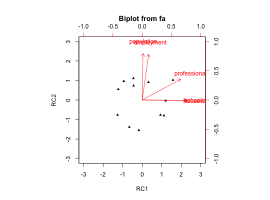

Harman (1967) uses 5 socio-economic variables for demonstrations of principal components and factor analysis. This example is used in the SAS manual for Proc Factor as well.
data(Harman.5)
A data frame with 12 observations on the following 5 variables.
populationa numeric vector
schoolinga numeric vector
employmenta numeric vector
professionala numeric vector
housevaluea numeric vector
Harman reports that the data "were taken (not entirely arbitrarily) from a study of the Los Angeles Standard Metropolitan Statistical Area. The twelve individuals are used in the examples are census tracts." (p 13).
Harman, Harry Horace (1967), Modern factor analysis. Chicago, University of Chicago Press.
SAS users manual, chapter 26: pages 1123-1192
data(Harman.5) if(require('GPArotation')){ pc2 <- principal(Harman.5,2,scores=TRUE) pc2$residual biplot(pc2,main="Biplot of the Harman 5 socio-demographic variables") }